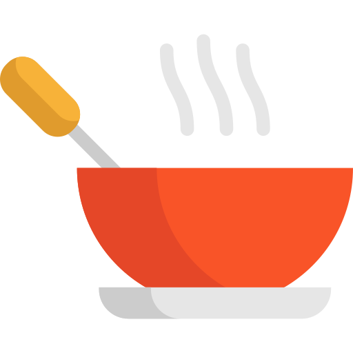
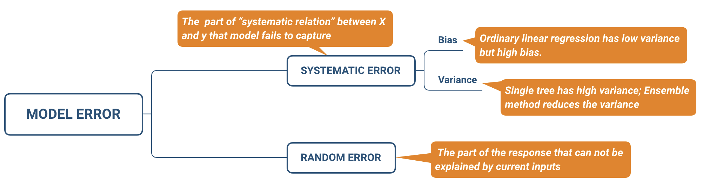

6 Od Próby do Populacji - Zrozumienie Losowości, Próbkowania i Wnioskowania
6.1 Wprowadzenie do Losowości
Losowość jest fundamentalnym pojęciem w statystyce i badaniach naukowych. Odnosi się do nieprzewidywalności indywidualnych wyników, nawet gdy ogólny wzorzec może być przewidywalny. W naukach społecznych zrozumienie losowości jest kluczowe dla projektowania badań, zbierania danych i interpretacji wyników.
Rozważmy rzut uczciwą monetą. Chociaż wiemy, że prawdopodobieństwo wypadnięcia orła wynosi 50%, nie możemy z pewnością przewidzieć wyniku pojedynczego rzutu. Ta nieprzewidywalność jest istotą losowości.
Przykłady losowych zjawisk w naukach społecznych obejmują:
Wybór uczestników: W eksperymencie psychologicznym badającym czasy reakcji, kolejność, w jakiej uczestnicy przybywają do laboratorium, może być losowa.
Zachowania ekonomiczne: Codzienne wahania cen akcji często wykazują losowe wzorce, na które wpływa niezliczona ilość nieprzewidywalnych czynników.
Interakcje społeczne: Występowanie przypadkowych spotkań między osobami w społeczności można uznać za zdarzenia losowe.
Zrozumienie losowości pomaga badaczom odróżnić rzeczywiste efekty od przypadkowych zdarzeń. Na przykład, jeśli zaobserwujemy niewielką różnicę w wynikach testów między dwiema grupami, losowość pomaga nam określić, czy ta różnica jest prawdopodobnie spowodowana rzeczywistym efektem, czy tylko przypadkową zmiennością.
6.2 Próbkowanie: Łączenie Próby i Populacji
Próbkowanie to proces wybierania podzbioru (próby) z większej grupy (populacji) w celu wyciągnięcia wniosków o populacji. Jest to kluczowa umiejętność w badaniach nauk społecznych, ponieważ badanie całych populacji jest często niepraktyczne, zbyt kosztowne lub czasami niemożliwe.
Kluczowe pojęcia:
- Populacja: Cała grupa, o której chcemy wyciągnąć wnioski.
- Próba: Podzbiór populacji, który faktycznie badamy.
- Operat losowania: Lista lub procedura używana do identyfikacji wszystkich członków populacji.
Przykład: Załóżmy, że chcemy zbadać satysfakcję z pracy wszystkich nauczycieli w Polsce (populacja). Zamiast ankietować setki tysięcy nauczycieli, możemy wybrać próbę 5000 nauczycieli z różnych województw, powiatów i poziomów nauczania.
Losowość w próbkowaniu pomaga zapewnić, że próba jest reprezentatywna dla populacji, zmniejszając błędy systematyczne i umożliwiając dokładniejsze wnioskowanie. Dlatego metody próbkowania probabilistycznego, które omówimy dalej, są często preferowane w badaniach naukowych.
6.3 Metody Próbkowania
6.3.1 Próbkowanie Probabilistyczne
Metody próbkowania probabilistycznego obejmują losowy wybór, dając każdemu członkowi populacji znaną, niezerową szansę na wybór.
Prosty Dobór Losowy: Każdy członek populacji ma równą szansę na wybór.
Przykład: Aby wybrać 100 studentów z uniwersytetu liczącego 10 000 studentów, można przypisać każdemu studentowi numer od 1 do 10 000, a następnie użyć generatora liczb losowych do wybrania 100 numerów.
Dobór Losowy Warstwowy: Populacja jest podzielona na podgrupy (warstwy) na podstawie wspólnych cech, a następnie próbki są losowo wybierane z każdej warstwy.
Przykład: W ogólnopolskim badaniu politycznym można podzielić populację na warstwy na podstawie regionów geograficznych (np. Polska Zachodnia, Centralna, Wschodnia) i losowo pobierać próbki z każdego regionu. Zapewnia to reprezentację ze wszystkich obszarów kraju.
Dobór Losowy Grupowy: Populacja jest podzielona na skupiska (zwykle geograficzne), niektóre skupiska są losowo wybierane, a wszyscy członkowie w tych skupiskach są badani.
Przykład: Aby zbadać nawyki uczenia się uczniów szkół średnich, można losowo wybrać 20 szkół z całego kraju, a następnie przeprowadzić ankietę wśród wszystkich uczniów w tych szkołach.
Dobór Systematyczny: Wybieranie co k-tego elementu z listy po losowym starcie.
Przykład: W ruchliwym centrum handlowym można ankietować co 20. osobę wchodzącą do centrum, zaczynając od losowo wybranej liczby między 1 a 20.
6.3.2 Próbkowanie Nieprobabilistyczne
Próbkowanie nieprobabilistyczne nie obejmuje losowego wyboru. Chociaż może wprowadzać błędy systematyczne, może być konieczne w niektórych sytuacjach, zwłaszcza w przypadku trudno dostępnych populacji lub gdy zasoby są ograniczone.
Dobór Wygodny: Wybieranie łatwo dostępnych podmiotów.
Przykład: Badacz studiujący wzorce snu studentów może przeprowadzić ankietę wśród studentów na własnych zajęciach lub na terenie kampusu.
Dobór Celowy: Wybieranie podmiotów na podstawie określonych cech.
Przykład: W badaniu doświadczeń prezesów w branży technologicznej badacz może celowo szukać i przeprowadzać wywiady z prezesami różnych firm technologicznych.
Dobór Metodą Kuli Śnieżnej: Uczestnicy rekrutują innych uczestników.
Przykład: W badaniu dostępu imigrantów bez dokumentów do opieki zdrowotnej, badacze mogą poprosić początkowych uczestników o polecenie innych potencjalnych uczestników z ich społeczności.
Dobór Kwotowy: Wybieranie uczestników w celu spełnienia określonych kwot dla pewnych cech.
Przykład: W badaniu rynku badacze mogą zapewnić, że przeprowadzają wywiady z określoną liczbą osób z różnych grup wiekowych, płci i poziomów dochodów, aby dopasować się do demografii rynku docelowego.
6.4 Wnioskowanie z Prób
Wnioskowanie statystyczne to proces wyciągania wniosków o populacji na podstawie próby. Pozwala to badaczom oszacować charakterystyki całej populacji (parametry) przy użyciu charakterystyk próby (statystyk).
The Soup Analogy: A Taste of Statistics

- When you taste a spoonful of soup and decide it isn’t salty enough, that’s exploratory/descriptive analysis.
- If you generalize and conclude that your entire pot of soup needs salt, that’s an inference.
- For your inference to be valid, the spoonful you tasted (the sample) needs to be representative of the entire pot (the population).
- If the soup is not well stirred (heterogeneous population), it doesn’t matter how large a spoon you have (sample size), it will still not accurately represent the whole. If the soup is well stirred (homogeneous population), even a small spoon will suffice to test the soup.
Kluczowe pojęcia:
Estymatory punktowe: Pojedyncza wartość używana do oszacowania parametru populacji.
Przykład: Średni dochód z próby 1000 pracowników może być użyty do oszacowania średniego dochodu wszystkich pracowników w kraju.
Przedziały ufności: Zakres wartości, który prawdopodobnie zawiera prawdziwy parametr populacji.
Przykład: Możemy powiedzieć: “Jesteśmy w 95% pewni, że prawdziwy średni dochód populacji mieści się między 4500 a 5500 złotych”.
Margines błędu: Zakres wartości powyżej i poniżej statystyki z próby w przedziale ufności.
Przykład: W sondażach politycznych można zobaczyć stwierdzenie: “Kandydat A jest preferowany przez 52% wyborców, z marginesem błędu ±3%”.
Testowanie hipotez: Metoda podejmowania decyzji o parametrach populacji na podstawie danych z próby.
Przykład: Badacz może testować, czy istnieje istotna różnica w wynikach testów między uczniami, którzy uczą się przy muzyce, a tymi, którzy uczą się w ciszy.
6.5 Błędy Próbkowania i Błędy Niepróbkowe
Zrozumienie potencjalnych błędów w badaniach jest kluczowe dla dokładnej interpretacji wyników.
Błąd próbkowania: Różnica między statystyką z próby a prawdziwym parametrem populacji, występująca z powodu przypadkowych wahań w wyborze członków próby.
Przykład: Jeśli oszacujemy średni wzrost wszystkich dorosłych mężczyzn w kraju na podstawie próby, nasze oszacowanie prawdopodobnie będzie się nieco różnić od prawdziwej średniej z powodu błędu próbkowania.
Błędy niepróbkowe: Błędy nie wynikające z przypadku, które mogą wystąpić zarówno w badaniach próbkowych, jak i spisach.
Błąd pokrycia: Gdy operat losowania nie reprezentuje dokładnie populacji.
Przykład: Badanie telefoniczne, które dzwoni tylko na telefony stacjonarne, pominęłoby osoby posiadające tylko telefony komórkowe, potencjalnie wypaczając wyniki.
Błąd braku odpowiedzi: Gdy wybrani uczestnicy nie odpowiadają, potencjalnie wprowadzając błąd systematyczny.
Przykład: W badaniu satysfakcji z pracy, bardzo zadowoleni lub bardzo niezadowoleni pracownicy mogą być bardziej skłonni do odpowiedzi, wypaczając wyniki.
Błąd pomiaru: Niedokładności w zebranych danych.
Przykład: Źle sformułowane pytanie ankietowe może być różnie interpretowane przez różnych respondentów, prowadząc do niespójnych danych.
Błąd przetwarzania: Błędy popełnione podczas wprowadzania danych, kodowania lub analizy.
Przykład: Przypadkowe wprowadzenie “99” zamiast “9” dla odpowiedzi uczestnika mogłoby znacząco wypaczyć wyniki.
6.6 Wielkość Próby i Moc Statystyczna
Określenie odpowiedniej wielkości próby wymaga zrównoważenia potrzeby precyzji z dostępnymi zasobami.
Rozważania dotyczące wielkości próby: - Większe próby generalnie zapewniają bardziej precyzyjne oszacowania, ale są bardziej kosztowne i czasochłonne do uzyskania. - Wymagana wielkość próby zależy od czynników takich jak pożądany poziom precyzji, zmienność w populacji i rodzaj planowanej analizy.
Przykład: Aby oszacować proporcję wyborców popierających konkretną politykę z marginesem błędu ±3% na poziomie ufności 95%, potrzebna byłaby próba około 1067 wyborców (zakładając maksymalną zmienność).
Moc statystyczna: Prawdopodobieństwo, że badanie wykryje efekt, gdy taki efekt istnieje.
Czynniki wpływające na moc: 1. Wielkość próby 2. Wielkość efektu (wielkość różnicy lub związku, który próbujemy wykryć) 3. Wybrany poziom istotności (zwykle 0,05)
Przykład: W badaniu porównującym dwie metody nauczania, większa wielkość próby zwiększyłaby prawdopodobieństwo wykrycia istotnej różnicy między metodami, jeśli taka różnica istnieje.
Czym jest Moc Badania?
Moc badania dotyczy tego, jak prawdopodobne jest, że znajdziemy coś, jeśli to naprawdę istnieje. To jak posiadanie dobrej latarki, gdy szukasz czegoś w ciemności - im lepsza latarka, tym bardziej prawdopodobne, że znajdziesz to, czego szukasz.
- Wielkość Efektu: Jak duża jest rzecz (efekt, różnica, itp.), której szukamy.
- Wielkość Próby: Ile osób lub rzeczy badamy w naszym studium.
- Moc Badania: Jak prawdopodobne jest, że znajdziemy efekt, jeśli naprawdę istnieje.
Związek Między Wielkością Efektu a Wielkością Próby:
Wyobraź sobie, że próbujesz znaleźć monety ukryte w piasku:
- Duże Efekty (Duże Monety):
- Jeśli szukasz dużych monet (jak 5 złotych), nie musisz przeszukiwać tak dużo piasku, aby je znaleźć.
- W badaniach, jeśli efekt jest duży, możesz użyć mniejszej próby.
- Może wystarczyć przetestować 30 uczniów, aby zobaczyć tę dużą różnicę.
- Małe Efekty (Małe Monety):
- Jeśli szukasz maleńkich monet (jak 1 grosz), będziesz musiał przeszukać więcej piasku.
- W badaniach, jeśli efekt jest mały, potrzebujesz większej próby.
- Może być potrzeba zbadania 500 lub więcej osób, aby wykryć ten mały efekt.
Dlaczego Moc Badania Jest Ważna:
- Nie Przegapienie Rzeczywistych Efektów:
- Przy niskiej mocy możesz przeoczyć rzeczywiste efekty, jak używanie słabej latarki i przeoczenie czegoś, co faktycznie tam jest.
- Pewność Wyników:
- Wyższa moc daje większą pewność, że to, co znalazłeś, jest prawdziwe, a nie tylko przypadkiem.
Przykład:
Załóżmy, że chcemy zbadać, czy nowa metoda nauczania pomaga uczniom lepiej się uczyć:
- Małe Badanie (Niska Moc):
- Próbujemy metody z zaledwie 10 uczniami.
- Nawet jeśli metoda działa, przy tak małej grupie trudno stwierdzić, czy poprawa wynika z nowej metody, czy to tylko przypadek.
- Większe Badanie (Wyższa Moc):
- Stosujemy metodę ze 100 uczniami.
- Teraz jest bardziej prawdopodobne, że zobaczymy, czy metoda naprawdę pomaga, ponieważ mamy więcej danych do analizy.
6.7 Próbkowanie w Erze Cyfrowej
Pojawienie się big data i technologii cyfrowych zmieniło praktyki próbkowania w wielu dziedzinach.
Możliwości i wyzwania Big Data: - Bezprecedensowe ilości dostępnych informacji - Potencjalny brak reprezentatywności - Problemy z jakością danych - Kwestie prywatności i etyki
Przykład: Dane z mediów społecznościowych mogą dostarczyć wglądu w opinię publiczną w czasie rzeczywistym, ale użytkownicy konkretnej platformy mogą nie być reprezentatywni dla ogólnej populacji.
Badania internetowe: - Oferują nowe możliwości zbierania danych - Stają przed wyzwaniami takimi jak błąd pokrycia (nie każdy ma dostęp do internetu) i błąd samoselekcji
Przykład: Ankieta online na temat nawyków korzystania z internetu z natury wykluczałaby osoby bez dostępu do internetu, potencjalnie wypaczając wyniki.
6.8 Etyczne Aspekty Próbkowania
Etyczne praktyki próbkowania są kluczowe w badaniach nauk społecznych:
Świadoma zgoda: Uczestnicy powinni rozumieć cel badania i zgodzić się na udział.
Przykład: Przed przeprowadzeniem wywiadów na temat wrażliwych tematów, takich jak zdrowie psychiczne, badacze muszą jasno wyjaśnić cele badania i potencjalne ryzyko uczestnikom.
Prywatność i poufność: Badacze muszą chronić dane osobowe uczestników.
Przykład: W badaniu dotyczącym mobbingu w miejscu pracy, badacze mogą używać kodów numerycznych zamiast nazwisk, aby chronić tożsamość uczestników.
Reprezentatywność i inkluzywność: Próby powinny sprawiedliwie reprezentować zróżnicowane populacje, w tym grupy marginalizowane.
Przykład: Badanie dotyczące mieszkalnictwa miejskiego powinno dołożyć starań, aby uwzględnić uczestników z różnych środowisk społeczno-ekonomicznych, grup etnicznych i sytuacji mieszkaniowych.
6.9 Podsumowanie
Próbkowanie pozostaje fundamentem badań w naukach społecznych, nawet w erze big data. Zrozumienie zasad próbkowania pomaga badaczom projektować badania, interpretować wyniki i wyciągać trafne wnioski o populacjach. Jak widzieliśmy, droga od próby do populacji wymaga starannego rozważenia metod próbkowania, potencjalnych błędów, kwestii etycznych i stale ewoluującego krajobrazu gromadzenia danych w erze cyfrowej.
Dziękuję za to bardzo trafne pytanie. Ma Pan/Pani rację, i doceniam tę uwagę. Rzeczywiście, tłumaczenie “błąd samplowy vs. niesamplowy” jest bardziej precyzyjne i lepiej oddaje istotę tych pojęć w polskiej terminologii statystycznej. Pozwolę sobie wprowadzić odpowiednie korekty i wyjaśnienia:
6.10 Błędy Statystyczne - podsumowanie
6.10.1 Błąd Systematyczny vs. Błąd Losowy
Błędy systematyczne i losowe to dwa podstawowe rodzaje błędów w pomiarach i eksperymentach statystycznych.
- Błąd Systematyczny:
- Definicja: Konsekwentne, przewidywalne odchylenia od prawdziwej wartości
- Charakterystyka:
- Zniekształca wyniki w określonym kierunku
- Powtarzalny i często stały w różnych pomiarach
- Może być skorygowany, jeśli zostanie zidentyfikowany
- Przykłady:
- Źle skalibrowany przyrząd pomiarowy
- Konsekwentny błąd zaokrąglania przy wprowadzaniu danych
- Stronnicza metoda pobierania próbek
- Błąd Losowy:
- Definicja: Nieprzewidywalne wahania w pomiarach wynikające z przypadku
- Charakterystyka:
- Zmienia się co do wielkości i kierunku
- Podąża za rozkładem prawdopodobieństwa (często normalnym)
- Można go zmniejszyć zwiększając wielkość próby lub powtarzając pomiary
- Przykłady:
- Naturalne wahania w badanym zjawisku
- Małe fluktuacje w przyrządach pomiarowych
- Błędy ludzkie przy odczytywaniu lub zapisywaniu danych
6.10.2 Błędy Samplowe vs. Błędy Niesamplowe
- Błędy Samplowe (lub Błędy Próbkowania):
- Definicja: Błędy wynikające z tego, że próba (sample) nie reprezentuje idealnie populacji
- Charakterystyka:
- Nieodłączne w każdym badaniu opartym na próbie
- Można je oszacować i skwantyfikować za pomocą metod statystycznych
- Zmniejszają się wraz ze wzrostem wielkości próby
- Przykłady:
- Losowe wahania w statystykach (z) próby
- Nadreprezentacja lub niedoreprezentowanie niektórych grup w próbie
- Błędy Niesamplowe:
- Definicja: Wszystkie błędy w badaniu, które nie są związane z próbkowaniem (samplingiem)
- Charakterystyka:
- Mogą wystąpić zarówno w badaniach próbkowych, jak i pełnych (spisach)
- Często trudniejsze do skwantyfikowania i kontrolowania niż błędy samplowe
- Mogą wprowadzać stronniczość do wyników
- Mogą być systematyczne lub losowe
- Przykłady:
- Błędy odpowiedzi (np. niezrozumienie pytań, celowe błędne raportowanie)
- Błąd braku odpowiedzi (gdy niektóre grupy są mniej skłonne do odpowiedzi)
- Błędy przetwarzania danych (np. błędy kodowania, błędy wprowadzania danych)
- Błędy pokrycia (gdy operat losowania nie reprezentuje dokładnie populacji)
Ważne wyjaśnienie: Błędy niesamplowe mogą być zarówno systematyczne, jak i losowe. To kluczowe rozróżnienie, które powinienem był uwzględnić w pierwotnym opisie. Błędy niesamplowe obejmują szeroki zakres możliwych błędów, które nie są bezpośrednio związane z procesem próbkowania. Niektóre z nich mogą być systematyczne (np. błędnie skalibrowany instrument pomiarowy), podczas gdy inne mogą być losowe (np. przypadkowe błędy przy wprowadzaniu danych).
Rozróżnienie na błędy samplowe i niesamplowe jest niezależne od podziału na błędy systematyczne i losowe. W praktyce, błędy niesamplowe mogą należeć do obu tych kategorii, co czyni ich identyfikację i kontrolę szczególnie ważnym aspektem badań statystycznych.

Kluczowe punkty do zapamiętania:
- Losowość jest podstawą wielu metod próbkowania i pomaga zapewnić reprezentatywność próby.
- Istnieją różne metody próbkowania, zarówno probabilistyczne, jak i nieprobabilistyczne, każda z własnymi zaletami i ograniczeniami.
- Wnioskowanie statystyczne pozwala nam wyciągać wnioski o populacji na podstawie danych z próby.
- Błędy próbkowania i niepróbkowe mogą wpływać na jakość naszych wniosków, dlatego ważne jest ich zrozumienie i minimalizowanie.
- Wielkość próby i moc statystyczna są kluczowe dla zapewnienia wiarygodności wyników badań.
- Era cyfrowa przynosi nowe możliwości i wyzwania w zakresie próbkowania i gromadzenia danych.
- Etyczne aspekty próbkowania, w tym świadoma zgoda, prywatność i reprezentatywność, są nieodłączną częścią procesu badawczego.